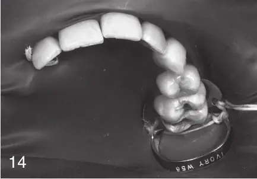
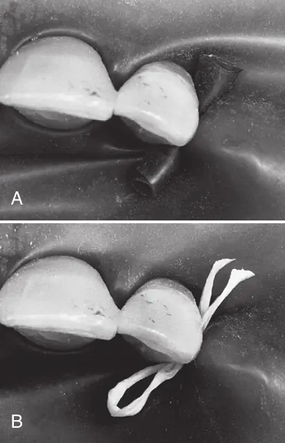

نسخه استخراجشده؛ ترجمه یا تأیید علمی انجام نشده است. وضعیت: captured
ورق روی کلمپ مولر اول پایین نشسته و حالا باید آن را از تماسهای پرمولرها و کانین رد کنی. همکلاسیات بیدرنگ نخ دندان را برمیدارد و ورق را با فشار در تماس میاندازد؛ ورق تا میخورد، گیر میکند و سوراخ میشود. کجای کار اشتباه بود؟

تکهای از ورق که میان دو سوراخ است و از تماس میگذرد، سپتوم نام دارد. قاعدهی اصلی: هر سپتوم تکلایه، بیتا و بیچروک از تماس رد شود. سپتوم تاخورده گیر میکند، پاره میشود یا درز میدهد.
تماسهایی را که بینخ رد نشدند با نخ دندان واکسدار یا نخ دندان نواری (tape) واکسدار رد کن؛ نخ بیواکس توصیه نمیشود. نخ نواری پهنتر است، هر بار سپتوم بیشتری را میبرد و کمتر آن را میبُرد، ولی باید صاف بماند و نپیچد.

در انتهای قدامی ورق، تماس محکم آخرین دندان معمولاً خودش ورق را نگه میدارد. اگر این تماس سست است، لنگر بساز: نخی که از تماس رد، حلقه و دوباره رد شود (دولا)، نوار باریکی از ورق که کشیده، رد و رها شود، یا Wedjets. برای تماس باز، تکهای ورق لولهشده. سرهای اضافه را کوتاه کن.
نکتهی طلایی: برای گذاشتن وج، ورق را کمی خلاف جهت ورود وج بکش و وج را همراه با رها کردن آرام ورق وارد کن؛ سپتوم زیر وج جمع یا پاره نمیشود.